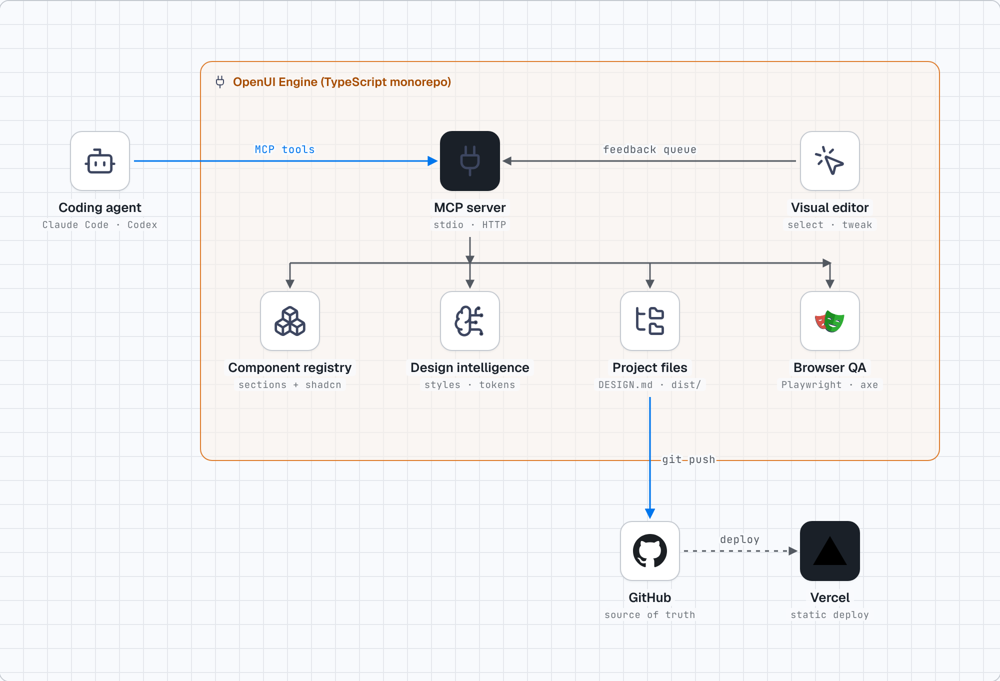
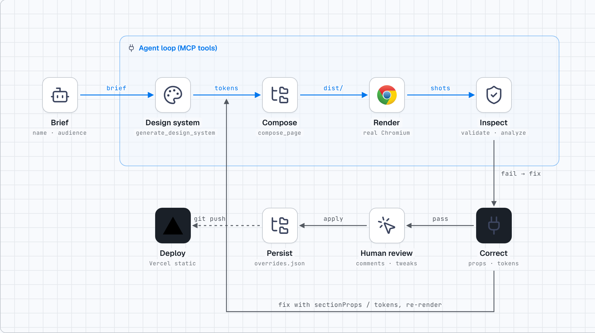

discover_components → get_component
A ranked shortlist with fit scores and reasons, then metadata or live registry source on demand.
OpenUI Engine hands your coding agent curated components, a WCAG-checked design system, a visual editor and a real-browser QA loop — so it composes and verifies instead of improvising.
Open source · local-first · no API keys
Works with any MCP client
Short ranked answers, not registry dumps. Source is fetched only when asked for.
A ranked shortlist with fit scores and reasons, then metadata or live registry source on demand.
Art direction, tokens and a DESIGN.md that passes Google's linter.
Chromium: overflow, axe, console, interactions, token compliance.
Measured scores with evidence, honest about what it cannot judge.
Click, comment, tweak, ask — persisted as id-keyed CSS overrides.
Node 20+ and a Chromium (or let Playwright download one).
git clone, pnpm install, pnpm build.
Add the stdio command to Claude Code, Codex or Cursor.
“Build a landing page for …” — the agent now has tools to do it well.
An MCP server in front of a component registry, design intelligence, a composer, a Playwright QA gate and a browser editor.

